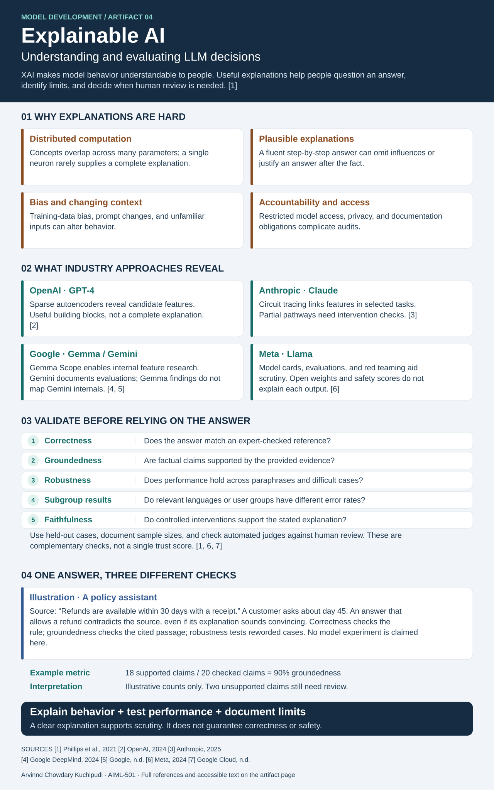

How much should we trust an AI explanation?
A visual field guide for learners, software teams, and project stakeholders evaluating generative AI. Explainability supports scrutiny; validation supplies evidence about reliability.


About this artifact
This original infographic explains how to evaluate explanations from large language models. It extends the first artifact's algorithm classification by demonstrating responsible AI analysis, evaluation design, and communication of uncertainty.
Unique value
The guide keeps explanation, transparency, and performance testing distinct while showing how they support one another. Every industry example includes a limitation, and a single worked scenario demonstrates why persuasive wording is insufficient.
Relevance
These skills support software teams evaluating AI assistants and communicating model limitations to stakeholders. They connect my software development background with evidence-based AI adoption.
Accessible text and supporting detail
Explainable AI and its importance
Explainable AI provides understandable information about a system's behavior or outputs. Useful explanations must suit their audience, reflect the system accurately, and acknowledge knowledge limits. Transparency also includes disclosures about intended uses, evaluation methods, and limitations (Phillips et al., 2021).
Challenges and responses
| Challenge | Why it matters | Practical response |
|---|---|---|
| Distributed computation | Concepts overlap across many parameters; a single neuron rarely supplies a complete explanation. | Use feature analysis and interventions; treat the result as partial evidence. |
| Plausible explanations | A fluent step-by-step answer can omit influences or justify an answer after the fact. | Check explanation faithfulness; do not equate verbal reasoning with an internal trace. |
| Bias and changing context | Training-data bias, prompt changes, and unfamiliar inputs can alter behavior. | Test subgroups, paraphrases, and out-of-domain cases. |
| Accountability and access | Restricted model access, privacy, and documentation obligations complicate audits. | Record versions, sources, evaluation methods, limitations, and human responsibility. |
Sources: Phillips et al. (2021), OpenAI (2024), Anthropic (2025), and Meta (2024). Audit and privacy concerns are presented as governance challenges, rather than a claim of compliance with a particular law.
Explanation techniques and their limits
| Approach | What it can reveal | What it cannot establish alone |
|---|---|---|
| Input-level analysis | Change or remove relevant input and compare outputs; inspect attention or probe internal representations when accessible. | Attention and probes reveal patterns, not a complete causal explanation. |
| Mechanistic analysis | Use sparse autoencoders to find features; trace candidate circuits and test interventions. | Features and circuit maps are incomplete and can introduce reconstruction errors. |
| Evidence and disclosure | Link claims to source passages; publish model cards, test methods, and limitations. | Citations can be wrong; model cards and open weights do not explain each prediction. |
Attention visualization highlights input relationships; probing tests whether information is detectable in internal representations. Both require careful interpretation. Changing an input helps examine sensitivity, but uncontrolled changes can introduce confounding factors. Source-grounded answers improve traceability without revealing the model's complete computation.
Industry examples
| Organization and model | Published approach | Evidence category | Boundary | Source |
|---|---|---|---|---|
| OpenAI · GPT-4 | Sparse autoencoders identify interpretable activity patterns. | Mechanistic research | Feature discovery does not fully reconstruct every decision. | OpenAI, 2024 |
| Anthropic · Claude | Circuit tracing connects features involved in selected tasks. | Mechanistic research | Partial pathways; generated reasoning can be unfaithful. | Anthropic, 2025 |
| Google · Gemma / Gemini | Gemma Scope opens feature-analysis tools; Gemini documentation describes evaluation and limitations. | Mechanistic research + transparency | Gemma evidence must not be presented as a direct map of Gemini internals. | Google DeepMind, 2024; Google, n.d. |
| Meta · Llama | Model cards describe evaluations and red teaming; released weights support independent investigation. | Transparency + behavioral validation | Access and safety scores do not establish causal explanations. | Meta, 2024 |
These are documented examples, not a ranking or an exhaustive survey. Gemma Scope studies Gemma; it is not evidence that Gemini's proprietary internal computation is fully interpretable.
Validation and performance metrics
The metric definitions below are proposed evaluation choices for this guide. Define the scoring rules before testing, separate development data from final evaluation data, and report the model version, prompts, sample sizes, and uncertainty. Check automated grading against human judgments and retest after meaningful changes.
| Dimension | Operational definition | Validation method | Limitation |
|---|---|---|---|
| Task correctness | Correct answers ÷ all scored answers | Freeze a representative held-out set; use reference answers and expert review. | A high score can conceal serious errors or poor subgroup results. |
| Claim groundedness | Supported factual claims ÷ all factual claims | Compare each claim with the supplied evidence; verify the evidence itself. | Agreement with a source does not prove that the source is true. |
| Robustness | Pass rate across controlled input variations | Paraphrase prompts and test adversarial or unfamiliar cases separately. | A finite test suite cannot cover all future inputs. |
| Subgroup reliability | Correctness reported separately by group | Compare relevant languages and user groups with sample sizes. | Small or unrepresentative samples make comparisons uncertain. |
| Explanation faithfulness | Agreement between explanation and intervention evidence | Change claimed influential factors and inspect effects under controlled tests. | Output changes alone do not establish a full internal causal mechanism. |
For a classification task, precision measures how often positive predictions are correct, while recall measures how many true positives are found. Those metrics suit a defined labeled task; they do not replace claim-level review for open-ended generated text. An LLM's stated confidence is not automatically a calibrated probability.
Source basis: Google Cloud (n.d.) for groundedness evaluation; Meta (2024) for application-specific testing and red teaming; Phillips et al. (2021) for explanation accuracy and knowledge limits. The combined evaluation framework is my synthesis.
Worked example with illustrative counts
A policy assistant receives this rule: “Refunds are available within 30 days with a receipt.” A user asks whether a purchase from 45 days ago qualifies. An answer allowing a refund contradicts the supplied rule even if its rationale sounds convincing. Correctness checks the reference answer; groundedness checks support for its claims; robustness checks whether rewording the question changes the result.
Suppose reviewers find support for 18 of 20 factual claims across a hypothetical test set. Groundedness is 18 ÷ 20 = 90%. This does not tell us how severe the remaining errors are, whether the policy source is accurate, or how the assistant performs for other users. These counts are instructional and are not results from GPT, Claude, Gemini, or Llama experiments.
Design and classification rationale
Challenges are grouped by their source: computation, explanations, data and context, and accountability. Techniques are classified by the evidence they produce: input sensitivity, internal mechanisms, or source and model disclosures. Validation is grouped by the question tested. The graphic then applies the categories to one example, making relationships explicit rather than presenting unrelated lists.
References
- Anthropic. (2025, March 27). Tracing the thoughts of a large language model. https://www.anthropic.com/research/tracing-thoughts-language-model
- Google. (n.d.). What is Gemini and how it works. https://gemini.google/overview/
- Google Cloud. (n.d.). Evaluate text generation models using Vertex AI Gen AI evaluation service. https://docs.cloud.google.com/vertex-ai/generative-ai/docs/samples/generativeaionvertexai-create-evaluation-task
- Google DeepMind. (2024, July 31). Gemma Scope: Helping the safety community shed light on the inner workings of language models. https://deepmind.google/blog/gemma-scope-helping-the-safety-community-shed-light-on-the-inner-workings-of-language-models/
- Meta. (2024). Llama 3.1 model card. https://huggingface.co/meta-llama/Llama-3.1-8B-Instruct
- Phillips, P. J., Hahn, C. A., Fontana, P. C., Yates, A. N., Greene, K., Broniatowski, D. A., & Przybocki, M. A.. (2021). Four principles of explainable artificial intelligence (NISTIR 8312). National Institute of Standards and Technology. https://doi.org/10.6028/NIST.IR.8312
- OpenAI. (2024, June 6). Extracting concepts from GPT-4. https://openai.com/index/extracting-concepts-from-gpt-4/